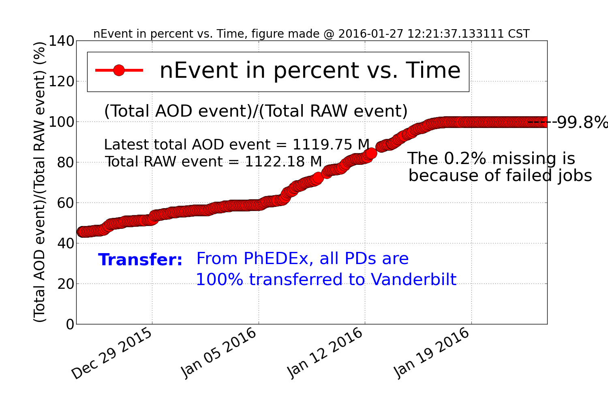
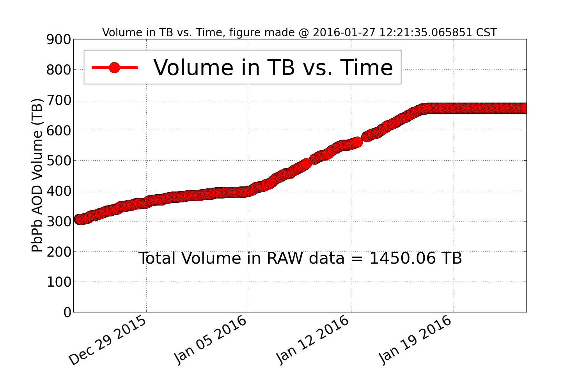
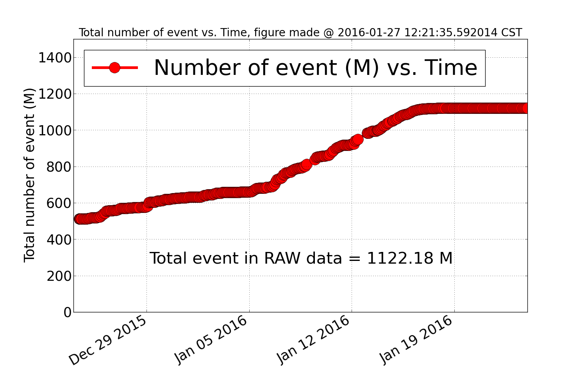
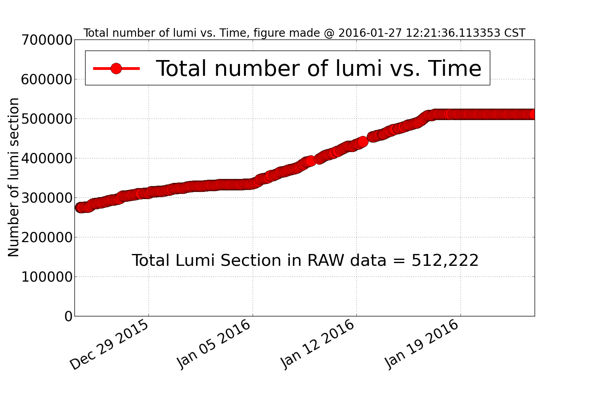
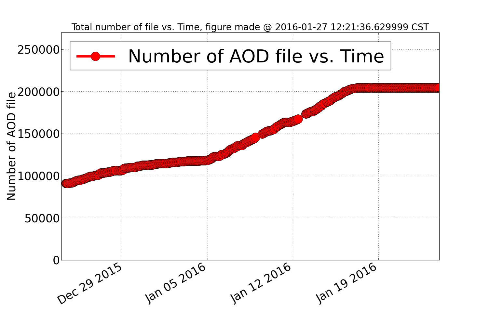

2015 PbPb run AOD data in DAS
- These figures show the PbPb Prompt-Reco status
- The data on these figures started from 10am CST on Dec 24, 2015
- All the 25 PDs are included in these figures
- These figures are updated every two hours
Update on Jan 24, 2016
- The monitors are stopped on Jan 24, 2016
- The reconstraction and transfer to Vanderbilt are done by Jan 24, 2016




